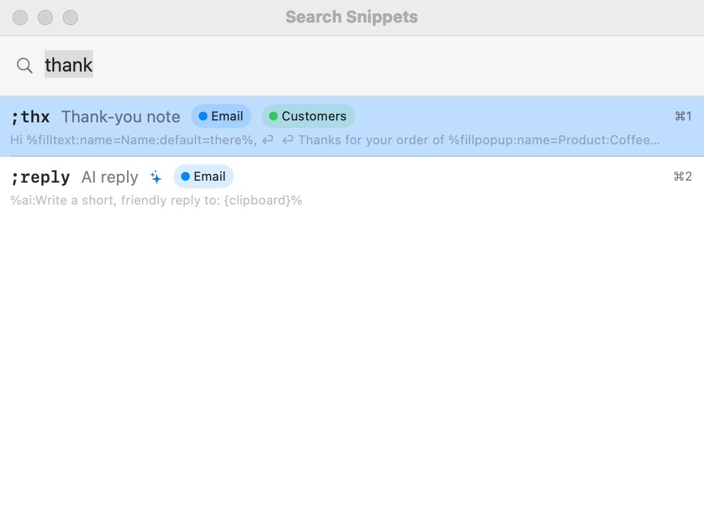
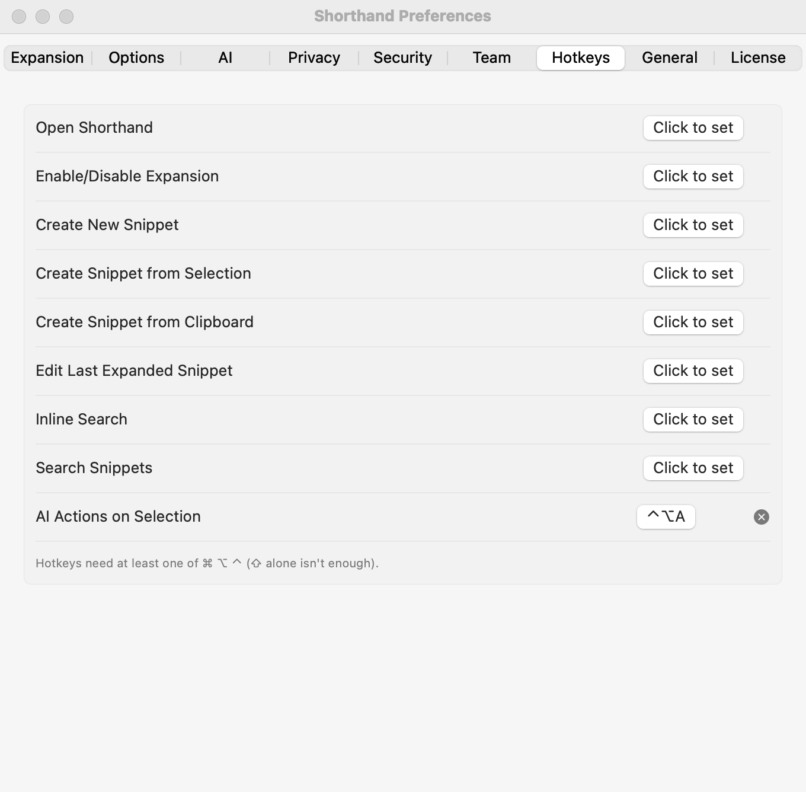

Search, Menus & Hotkeys
Can’t remember an abbreviation? Search for the snippet and insert it, pick it from the menu bar, or use a hotkey.
To search and insert a snippet
- Click where you want the text to go.
- Choose Search Snippets… from the menu bar icon, or press your Search Snippets hotkey.
- Type part of the abbreviation, label, tag, or text. To narrow it to a tag, type
#and the tag name (see below). - Press Return or Tab to insert the highlighted snippet, or click one. ⌘1–⌘9 insert the first nine results directly.

- With an empty search, your snippets are listed by how often you use them.
- Inline Search is the same panel, opened next to your text cursor instead of at the top of the screen. It has no menu item; give it a hotkey.
- Groups with Include in search turned off are left out (the Suggested Snippets group, for example).
- Snippets with fill-ins show the fill-in window as usual after you pick them.
Searching by tag
The search field reads Search snippets (#tag to filter by tag). A word that starts with # shows only snippets with a matching tag; the other words search as usual.
| You type | What you get |
|---|---|
#email | Every snippet with a tag containing “email”. |
#email thanks | Snippets tagged “email” that also match “thanks”. |
#email #clients | Only snippets that have both tags. |
clients | Plain words match tag names too, as well as abbreviations, labels, and text. |
Each result shows up to three of its tags as small colored chips. More about tags: Tags.
Search by meaning
The search window also finds snippets by what they mean, not just the words they contain: “money back” finds your refund policy. These results come after exact matches and are marked ✨.
- It runs entirely on your Mac using Apple’s built-in language tools. No AI provider, no key, and nothing is sent anywhere.
- It works best in English; in other languages, it matches words.
- Turn it off in Settings ▸ AI ▸ On this Mac.
The menu bar menu
Click the Shorthand icon in the menu bar. Hotkeys you’ve set are shown next to each item.
| Item | What it does |
|---|---|
| Search Snippets… | Opens search. |
| ✨ AI Actions on Selection… | Rewrites the selected text with AI (AI Actions). |
| Open Shorthand | Opens the main window. |
| Block Shorthand in App / Block Shorthand on site | Stops Shorthand listening in the app or on the website in front. See Blocklist. |
| ⏸ Paused here: … and Allow Shorthand Here | Shown instead when the app or website in front is blocked, or (as ⏸ Paused here: waiting for your answer) while Shorthand is asking whether to work in a new app. Allow Shorthand Here removes the block, or answers Allow. See The first time you use an app. |
| Disable Expansion / Enable Expansion | Pauses or resumes all expansion. |
| Create New Snippet… | Opens the Create Snippet window, empty. |
| Create Snippet from Selection… | Same, with the text selected in the front app. |
| Create Snippet from Clipboard… | Same, with the clipboard contents (keeps formatting). |
| Edit Last Expanded Snippet… | Opens the snippet you used last. |
| 💡 … Snippet Suggestions… | Shown when there are suggestions waiting. |
| Your groups | Each group is a submenu. Choose a snippet to insert it where you were typing. |
| Preferences… | Opens Settings. |
| Help | Opens this help. |
| Buy Me a Coffee on Ko-fi… | See Support Shorthand. |
| Quit Shorthand | Quits. Abbreviations stop expanding. |
Warnings (Secure Input, a second text expander running, missing Accessibility permission) appear in this menu too; see Troubleshooting.
The icon itself changes: a crossed-out icon means expansion is off; a warning triangle means Secure Input is blocking expansion.
Hotkeys

Hotkeys work from any app. Set them in Settings ▸ Hotkeys:
- Click the button next to an action (it says Click to set).
- When it says Press keys…, press the combination you want. Press Esc to cancel.
- To remove a hotkey, click the ⓧ next to it.
A hotkey needs at least one of ⌘ ⌥ ⌃; ⇧ alone isn’t enough. Pick combinations other apps don’t use.
| Action | Default |
|---|---|
| Open Shorthand | none |
| Enable/Disable Expansion | none |
| Create New Snippet | none |
| Create Snippet from Selection | none |
| Create Snippet from Clipboard | none |
| Edit Last Expanded Snippet | none |
| Inline Search | none |
| Search Snippets | none |
| AI Actions on Selection | ⌃⌥A |
Keyboard shortcuts in Shorthand’s windows
| Shortcut | Menu item |
|---|---|
| ⌘, | Shorthand ▸ Settings… |
| ⌘N | File ▸ New Snippet |
| ⇧⌘N | File ▸ New Group |
| ⇧⌘I | File ▸ Import Snippets… |
| ⇧⌘E | File ▸ Export Snippets… |
| ⌘W | File ▸ Close Window |
| ⌘B / ⌘I / ⌘U | Format ▸ Bold / Italic / Underline |
| ⌘T | Format ▸ Show Fonts |
| ⇧⌘C | Format ▸ Show Colors |
| ⌘0 | Window ▸ Snippet Library |
| — | Window ▸ Statistics: expansions, characters, and time saved, most-used snippets |
| ⇧⌘T | Window ▸ Tag Manager (see Tag Manager) |
| ⌘A | Edit ▸ Select All: in the snippet list, selects every snippet shown (see Multi-Select) |
| ⌘? | Help ▸ Shorthand Help |
| — | Help ▸ Macro Reference |